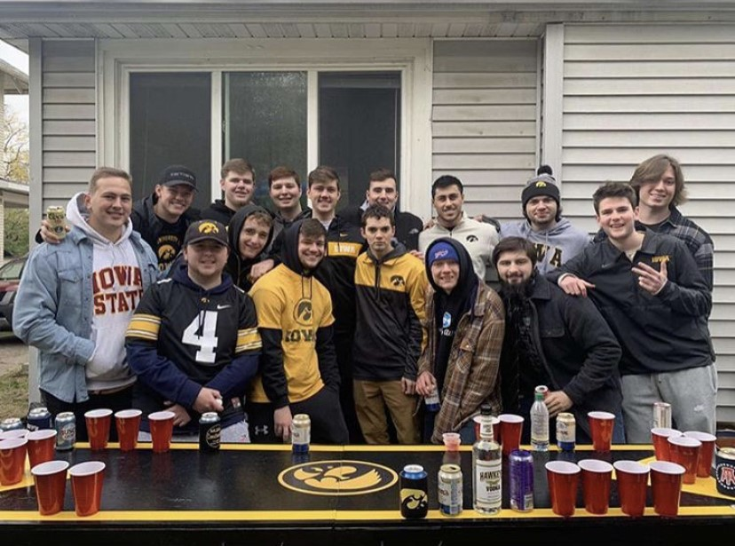
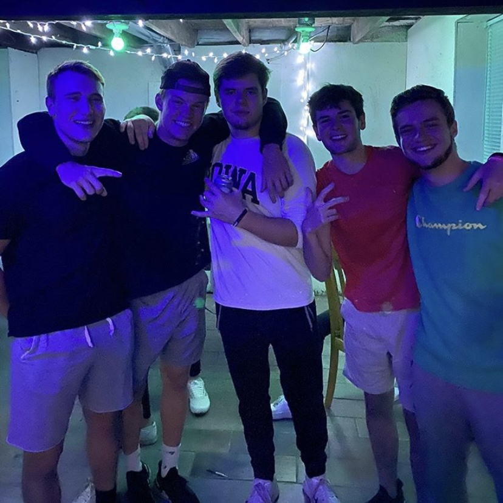
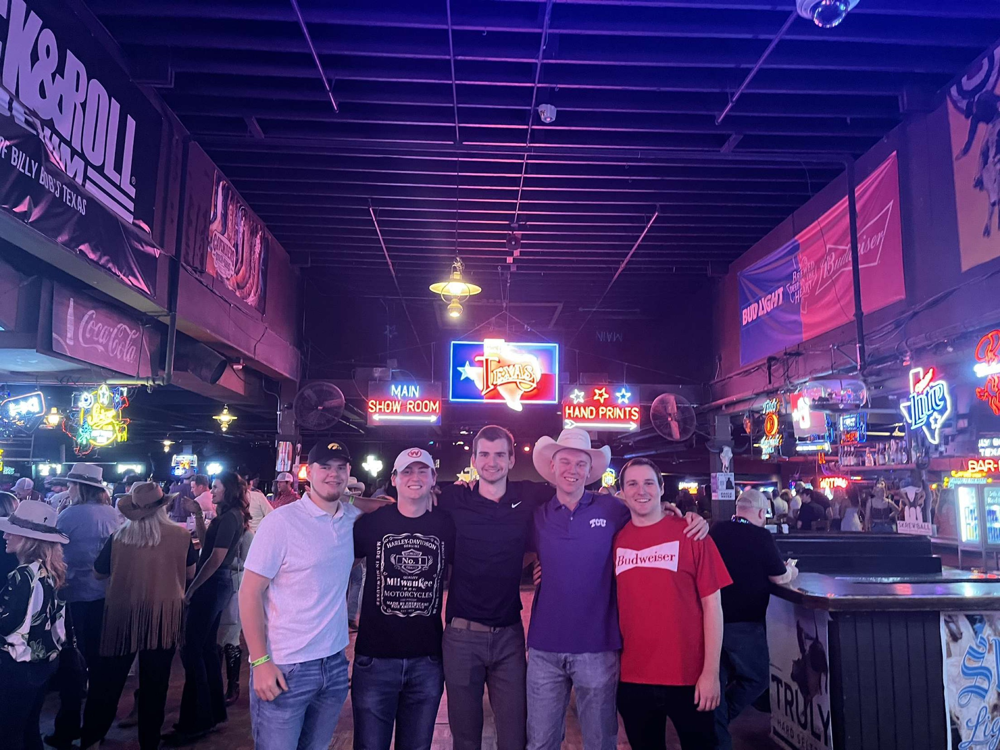

.
- 
- 
- 

DPM Final Project
I am a Senior at the University of Iowa studying BAIS and Finance. Upon graduation this May, I am moving to Charlotte to work for PwC as a DAT Associate. I'm a huge sports fan. I am a supporter of the Hawkeyes, Packers, Brewers, Bucks, Predators, and Will Zalatoris on the PGA Tour. Listed below are my favorite sports in order.
My BAIS Capstone project has been to finish creating and then marketing a website called Find211. This website aims to connect people to 211 resources that they may be in need of. 211 is a collection of local services and resources that United Way has put together. The goal of the project is to connect those in need to these resources in an even more accessible way.
As a Wisconsin kid, from the suburbs of Milwaukee, coming to Iowa for college was definitely a scary, but exciting choice. I didn't really know anyone when I first got here freshmen year, but the university, the community, and the people have made the decision to come to Iowa the best decision of my life. I would not trade my time in Iowa City for anything. So for that, Thank You, Iowa.